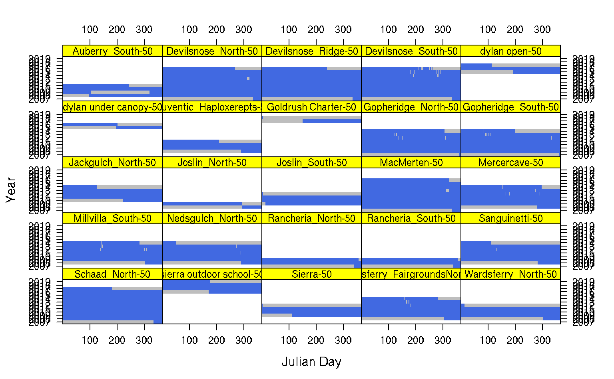

fetchHenry.RdThis function is a front-end to the REST query functionality of the Henry Mount Soil Temperature and Water Database.
fetchHenry(what='all', usersiteid = NULL, project = NULL, sso = NULL, gran = "day", start.date = NULL, stop.date = NULL, pad.missing.days = TRUE, soiltemp.summaries = TRUE)
| what | type of data to return: 'sensors': sensor metadata only | 'soiltemp': sensor metadata + soil temperature data | 'soilVWC': sensor metadata + soil moisture data | 'airtemp': sensor metadata + air temperature data | 'waterlevel': sensor metadata + water level data |'all': sensor metadata + all sensor data |
|---|---|
| usersiteid | (optional) filter results using a NASIS user site ID |
| project | (optional) filter results using a project ID |
| sso | (optional) filter results using a soil survey office code |
| gran | data granularity: "day", "week", "month", "year"; returned data are averages |
| start.date | (optional) starting date filter |
| stop.date | (optional) ending date filter |
| pad.missing.days | should missing data ("day" granularity) be filled with NA? see details |
| soiltemp.summaries | should soil temperature ("day" granularity only) be summarized? see details |
Filling missing days with NA is useful for computing and index of how complete the data are, and for estimating (mostly) unbiased MAST and seasonal mean soil temperatures. Summaries are computed by first averaging over Julian day, then averaging over all days of the year (MAST) or just those days that occur within "summer" or "winter". This approach makes it possible to estimate summaries in the presence of missing data. The quality of summaries should be weighted by the number of "functional years" (number of years with non-missing data after combining data by Julian day) and "complete years" (number of years of data with >= 365 days of non-missing data).
a list containing:
a SpatialPointsDataFrame object containing site-level information
a data.frame object containing soil temperature timeseries data
a data.frame object containing soil moisture timeseries data
a data.frame object containing air temperature timeseries data
a data.frame object containing water level timeseries data
This function and the back-end database are very much a work in progress.
#> Warning: package 'lattice' was built under R version 3.5.3# get CA630 data as daily averages x <- fetchHenry(project='CA630', gran = 'day')#>#> | | | 0% | | | 1% | |= | 1% | |= | 2% | |== | 2% | |== | 3% | |== | 4% | |=== | 4% | |=== | 5% | |==== | 5% | |==== | 6% | |===== | 6% | |===== | 7% | |===== | 8% | |====== | 8% | |====== | 9% | |======= | 9% | |======= | 10% | |======= | 11% | |======== | 11% | |======== | 12% | |========= | 12% | |========= | 13% | |========= | 14% | |========== | 14% | |========== | 15% | |=========== | 15% | |=========== | 16% | |============ | 16% | |============ | 17% | |============ | 18% | |============= | 18% | |============= | 19% | |============== | 19% | |============== | 20% | |============== | 21% | |=============== | 21% | |=============== | 22% | |================ | 22% | |================ | 23% | |================ | 24% | |================= | 24% | |================= | 25% | |================== | 25% | |================== | 26% | |=================== | 26% | |=================== | 27% | |=================== | 28% | |==================== | 28% | |==================== | 29% | |===================== | 29% | |===================== | 30% | |===================== | 31% | |====================== | 31% | |====================== | 32% | |======================= | 32% | |======================= | 33% | |======================= | 34% | |======================== | 34% | |======================== | 35% | |========================= | 35% | |========================= | 36% | |========================== | 36% | |========================== | 37% | |========================== | 38% | |=========================== | 38% | |=========================== | 39% | |============================ | 39% | |============================ | 40% | |============================ | 41% | |============================= | 41% | |============================= | 42% | |============================== | 42% | |============================== | 43% | |============================== | 44% | |=============================== | 44% | |=============================== | 45% | |================================ | 45% | |================================ | 46% | |================================= | 46% | |================================= | 47% | |================================= | 48% | |================================== | 48% | |================================== | 49% | |=================================== | 49% | |=================================== | 50% | |=================================== | 51% | |==================================== | 51% | |==================================== | 52% | |===================================== | 52% | |===================================== | 53% | |===================================== | 54% | |====================================== | 54% | |====================================== | 55% | |======================================= | 55% | |======================================= | 56% | |======================================== | 56% | |======================================== | 57% | |======================================== | 58% | |========================================= | 58% | |========================================= | 59% | |========================================== | 59% | |========================================== | 60% | |========================================== | 61% | |=========================================== | 61% | |=========================================== | 62% | |============================================ | 62% | |============================================ | 63% | |============================================ | 64% | |============================================= | 64% | |============================================= | 65% | |============================================== | 65% | |============================================== | 66% | |=============================================== | 66% | |=============================================== | 67% | |=============================================== | 68% | |================================================ | 68% | |================================================ | 69% | |================================================= | 69% | |================================================= | 70% | |================================================= | 71% | |================================================== | 71% | |================================================== | 72% | |=================================================== | 72% | |=================================================== | 73% | |=================================================== | 74% | |==================================================== | 74% | |==================================================== | 75% | |===================================================== | 75% | |===================================================== | 76% | |====================================================== | 76% | |====================================================== | 77% | |====================================================== | 78% | |======================================================= | 78% | |======================================================= | 79% | |======================================================== | 79% | |======================================================== | 80% | |======================================================== | 81% | |========================================================= | 81% | |========================================================= | 82% | |========================================================== | 82% | |========================================================== | 83% | |========================================================== | 84% | |=========================================================== | 84% | |=========================================================== | 85% | |============================================================ | 85% | |============================================================ | 86% | |============================================================= | 86% | |============================================================= | 87% | |============================================================= | 88% | |============================================================== | 88% | |============================================================== | 89% | |=============================================================== | 89% | |=============================================================== | 90% | |=============================================================== | 91% | |================================================================ | 91% | |================================================================ | 92% | |================================================================= | 92% | |================================================================= | 93% | |================================================================= | 94% | |================================================================== | 94% | |================================================================== | 95% | |=================================================================== | 95% | |=================================================================== | 96% | |==================================================================== | 96% | |==================================================================== | 97% | |==================================================================== | 98% | |===================================================================== | 98% | |===================================================================== | 99% | |======================================================================| 99% | |======================================================================| 100%#># inspect data gaps levelplot(factor(!is.na(sensor_value)) ~ doy * factor(year) | name, data=x$soiltemp, col.regions=c('grey', 'RoyalBlue'), cuts=1, colorkey=FALSE, as.table=TRUE, scales=list(alternating=3), par.strip.text=list(cex=0.75), strip=strip.custom(bg='yellow'), xlab='Julian Day', ylab='Year')# }